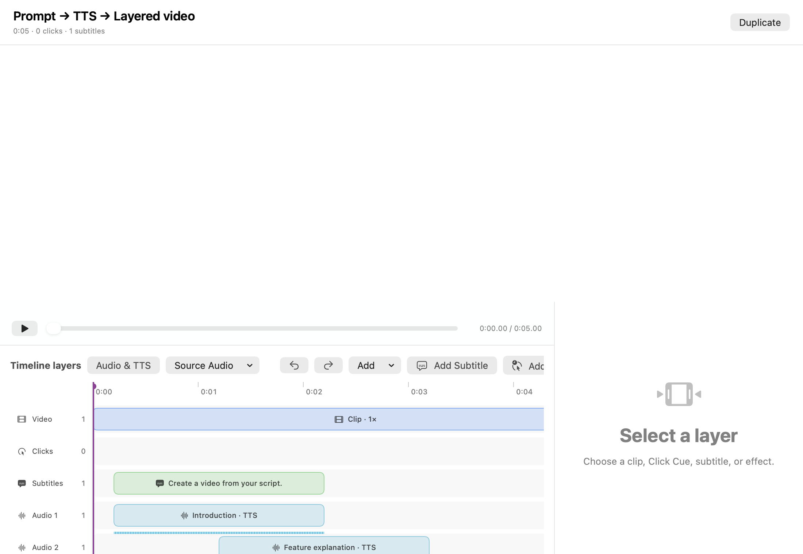

구현 안내 · 2026-09-10
영상과 음성을 따로 준비하고,
Storybird에서 레이어로 합성한다
사용자는 영상과 음성을 각자 편하게 녹화·녹음한다. 에이전트는 완성된 자산의 실제 길이를 확인하고, 장면과 음성·자막·효과의 시간을 맞춘다. Storybird가 편집 상태를 저장하고 미리보기와 최종 영상을 만든다.
기본 제작 흐름은 에이전트가 대본으로 TTS 음성을 생성하는 방식이다. 준비된 로컬 모델과 기존 음성 프로필이 있으면 문장별 녹음 요청 없이 편집과 내보내기까지 진행한다. 사용자는 직접 녹음이나 파일 가져오기를 선택할 수도 있다.
1. 음성 자산과 레이어
| 구성 | 사용 방법 |
|---|
| TTS 초안 | 대본으로 음성을 생성하고 실제 길이를 확인한 뒤 배치한다. |
| 프로젝트 오디오 자산 | 완성된 파일을 보존하고 여러 레이어에서 재사용한다. |
| 오디오 레이어 | 어느 원본 구간을 언제, 어떤 음량과 페이드로 재생할지 정한다. 겹치는 소리는 함께 재생된다. |
| 선택적 사용자 입력 | 직접 녹음 또는 WAV·MP3·M4A 가져오기로 추가 음성을 준비한다. |
근거: 타임라인 검증,
내레이션 모델,
오디오 합성,
MCP 도구.
2. 제작 흐름
같은 흐름의 Mermaid 원문
위 SVG는 이 흐름을 오프라인에서도 볼 수 있도록 표현한 그림이다.
flowchart LR
V["화면 녹화 · 영상 가져오기"] --> A["프로젝트 소유 자산"]
U["사용자의 별도 음성 녹음 · 파일 선택"] --> A
G["기존 프로필 기반 음성 생성"] --> A
A --> E["에이전트가 길이 조회 · 레이어 편집"]
E --> S["Storybird가 저장 · 합성"]
S --> P["영상 프리뷰 · 오디오 미리듣기"]
P --> E
S --> X["H.264 영상 + AAC 믹스 MP4"]
3. 편집 기능
음성 준비
- 프로젝트에서 별도 음성 녹음을 시작·일시정지·재개·종료하고, 파형·경과 시간·입력 장치를 확인한다. 미리듣기 후 저장하거나 취소한다.
- 사용자가 고른 WAV·MP3·M4A 파일을 검증하고 프로젝트 자산으로 복사한다. 외부 원본은 수정하지 않는다.
- 직접 녹음은 양수 길이의 유효 오디오이면 저장할 수 있다. 음성 프로필의 10초 최소 조건은 프로젝트 녹음에 적용하지 않는다.
- 녹음 결과 저장과 타임라인 배치를 분리한다. 배치가 실패해도 완성한 오디오를 다시 녹음하지 않고 재사용한다.
- 기존 프로필 기반 음성 생성과 문장별 재생성은 유지한다. 녹음·가져온 오디오에는 생성용 프로필과 원고를 강제하지 않는다.
오디오 레이어 편집
- 각 레이어를 파형과 이름이 있는 독립 행으로 표시한다. 레이어 간 시간 겹침과 동시 재생을 허용한다. 행 순서가 소리의 우선순위를 결정하지 않는다.
- 이동, 앞뒤 트림, 분할, 복제, 삭제, 음량, 음소거, 페이드 인·아웃을 UI와 MCP에 제공한다. 두 레이어를 겹치고 각각 페이드를 주어 교차 전환할 수 있다.
- 자산 식별자, 고유 레이어 식별자, 이름, 원본 사용 구간, 프로젝트 시작 시각, 음량, 음소거, 페이드 길이, 장면 연결 정보를 저장한다. 모든 시간 단위는 초다.
- 원본 사용 구간은 자산 안에 있고 길이가 0초보다 커야 한다. 프로젝트 시작은 0초 이상이며 레이어 끝은 프로젝트 끝 이하여야 한다. 분할은 레이어 내부에서만 허용한다.
- 음량은 유한한 0 이상의 배율이며 1은 원래 음량이다. 기본값은 음량 1, 음소거 해제, 페이드 0초다. 페이드 길이는 0초 이상이고 두 페이드 길이의 합은 사용 구간 길이를 넘지 않는다. 페이드는 선형으로 적용한다.
- 고정 시각과 시작 장면 연결을 선택한다. 장면 연결은 기존 시작점 귀속·삭제·실행 취소 규칙을 따르고, 영상 속도 변경이 독립 오디오의 속도·음높이·길이를 바꾸지 않는다.
- 장면 편집 뒤 다른 오디오와 겹치는 결과는 허용한다. 프로젝트 범위를 넘으면 편집 전체를 거부하며 영상 길이나 다른 레이어를 자동으로 변경하지 않는다.
- 영상에 포함된 기본 오디오는 기존처럼 영상 편집을 따라간다. 해당 오디오의 음량과 음소거도 조절할 수 있다.
에이전트 편집과 검토
- MCP(Model Context Protocol, 에이전트가 앱 기능을 호출하는 도구 인터페이스)는 자산·레이어·실제 길이·파형 요약을 조회하고 위 편집 기능을 수행한다.
- 선택 구간의 합성 오디오를 로컬 미리듣기 파일로 만들고 경로·길이·피크 정보를 반환한다. 피크는 합성 소리의 최대 진폭이며, 에이전트가 음량을 조절할 근거로 사용한다.
- 영상은 기존 합성 프레임 조회로 확인한다. 오디오 파일을 만들었다는 사실만으로 발음과 자연스러움을 검증했다고 보고하지 않는다.
- 모든 실제 편집은 최신 revision(프로젝트 수정 버전)을 확인하고 하나의 변경·실행 취소 단위로 저장한다. 충돌과 실패는 기존 상태를 유지한다.
- 완성 자산은 여러 레이어에서 재사용할 수 있다. 기존 생성 초안의 최초 배치는 한 번만 허용하고, 반복 사용은 배치된 레이어 복제로 수행한다.
합성과 보존
- 프리뷰·구간 미리듣기·최종 출력은 같은 시간·트림·음량·음소거·페이드 규칙으로 모든 활성 오디오를 합산한다. 레이어별 설정 외에 음량을 몰래 자동 보정하지 않는다.
- 최종 MP4는 H.264 영상 1개와 모든 오디오를 합친 AAC 트랙 1개를 가진다. 오디오 소스가 전혀 없으면 오디오 트랙을 만들지 않는다. 편집 프로젝트에는 각 레이어를 계속 보존한다.
- 트림·분할·삭제는 오디오 원본을 수정하지 않는다. 참조 중이거나 실행 취소에 필요한 자산은 유지한다. 복제 프로젝트는 배치된 오디오도 독립적으로 소유한다.
- 기존 지원 프로젝트의 내레이션은 시작점·음량·언어·프로필·음성을 보존해 읽는다. 현재 지원하지 않는 과거 프로젝트 형식까지 호환성을 확대하는 계약은 아니다.
- 오디오를 읽거나 합성하지 못하면 해당 소리를 누락한 채 성공하지 않는다. 출력은 임시 파일을 검증한 뒤에만 반영한다.
4. 입력 권한과 작업 상태
사용자가 프로젝트 녹음 화면에서 직접 시작할 때만 마이크를 활성화한다. 화면 녹화와 프로젝트 음성 녹음은 동시에 실행하지 않는다. 프로젝트 음성 녹음은 한 번에 하나이며 음성 프로필 녹음과도 동시에 실행하지 않는다. 입력 장치는 시작할 때 확정하고 녹음 중 변경하지 않는다.
MCP는 마이크 시작·음성 파일 선택·프로필 등록·삭제 권한을 얻지 않는다. 사용자가 저장한 프로젝트 자산과 기존 프로필을 사용한다. 따라서 외부 녹음 파일은 사용자가 한 번 가져온 뒤 에이전트가 배치한다. 민감 입력을 제외한 레이어 편집은 반복 승인 없이 수행한다.
프로젝트 녹음의 상태는 대기 → 녹음 ↔ 일시정지 → 미리듣기 → 저장 중 → 완료다. 취소는 입력과 미저장 임시 샘플을 정리한다. 저장 중 중복 저장·닫기를 막고, 저장 실패는 미리듣기와 샘플을 유지하여 재시도한다. 앱 재시작 시 녹음을 자동 재개하지 않는다. 녹음·자산 저장·가져오기·생성·출력 중에는 프로젝트 저장 폴더 변경을 막는다.
5. 에이전트 도구 흐름
storybird_list_voice_profiles와 storybird_get_edit_context로 목소리와 장면을 확인한다.storybird_start_narration_draft에 문장과 언어를 전달하고 storybird_get_narration_draft로 완료와 실제 길이를 확인한다.- 필요한 장면 길이를 편집한 다음 최신 revision으로
storybird_place_narration_draft를 호출한다.
storybird_update_audio_layer로 트림·음량·페이드를 편집하고 storybird_duplicate_audio_layer로 같은 음성을 재사용한다.storybird_render_audio_preview와 영상 프레임 조회로 결과를 점검하고 storybird_start_export의 완료를 확인한다.
모델 준비와 음성 프로필 등록은 네이티브 설정에서 한 번 수행한다. MCP는 마이크를 시작하거나 외부 음성 파일을 선택하지 않는다. 텍스트와 영상 내용을 해석하는 역할은 에이전트가 맡고 Storybird는 명시적인 편집 명령을 수행한다.

6. 검증 범위
- 서로 다른 주파수의 합성 음성 자산 3개를 겹쳐 배치하고, 출력의 겹침 구간에서 세 신호가 모두 존재하는지 측정한다.
- 트림·분할·음량·음소거·페이드가 실제 출력 샘플에 반영되고 프리뷰와 같은 시각을 사용하는지 확인한다.
- UI와 MCP의 동일 편집 결과, revision 충돌, 잘못된 범위, 저장 실패, 실행 취소와 재실행을 검증한다.
- 프로젝트 재실행·복제·원본 외부 파일 이동 뒤에도 배치된 음성이 유지되는지 임시 라이브러리로 검증한다.
- 별도 녹음 화면은 합성 상태로 렌더링하고 입력 세션의 동시 실행 차단을 테스트한다. 실제 마이크 하드웨어 녹음과 음질 평가는 사용자 입력이 필요하며 이번 자동 검증에 포함하지 않는다.
- 합성 데이터로 UI 스크린샷과 MCP→편집→미리듣기→MP4 내보내기 흐름을 확인한다. 수행하지 못한 실제 기기 검증은 완료로 표시하지 않는다.
핵심 용어: 자산은 완성된 원본 파일, 레이어는 그 파일의 어느 구간을 언제 어떻게 재생할지 정한 편집 정보, 믹스는 같은 시각의 여러 소리를 합한 결과다.